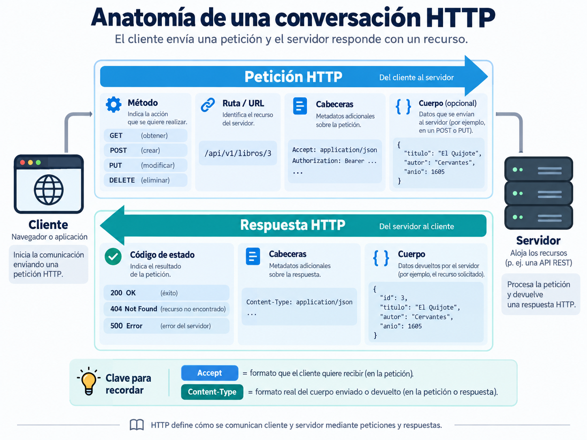
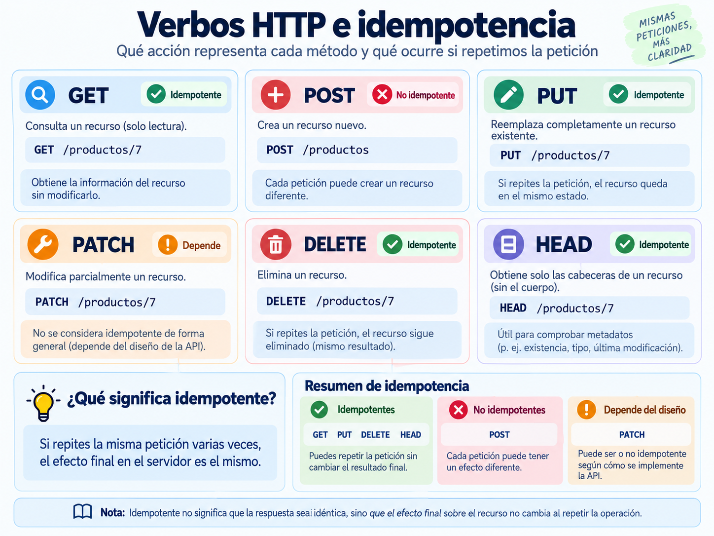
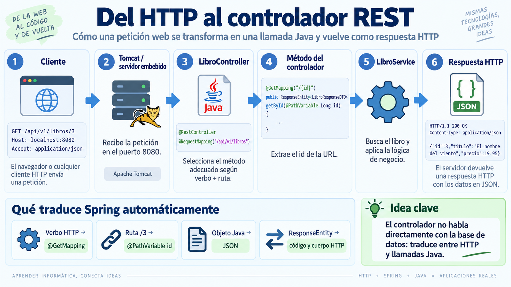
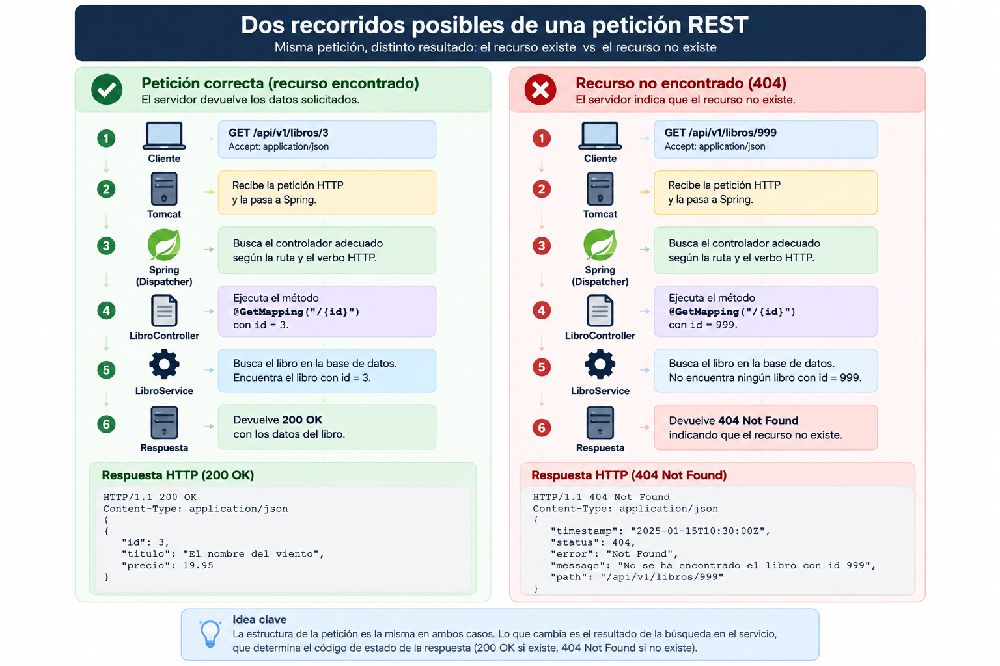
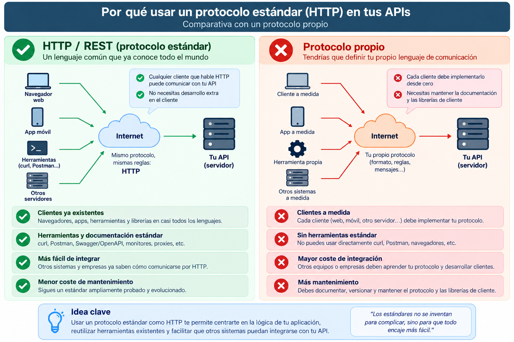

🧩 1. Protocolos estándar y servicios REST: leyendo el controlador¶
Descarga de diapositivas
Ya sabes que dos programas pueden hablarse por red usando una IP y un puerto, y que para entenderse necesitan un protocolo: un conjunto de reglas fijas sobre cómo tiene que ser cada mensaje, que los dos lados conocen de antemano — como cuando rellenas un formulario con casillas fijas en vez de escribir una carta libre: quien lo lee sabe exactamente dónde va a encontrar cada dato, porque el formato ya está pactado. Hoy vas a ver ese protocolo en detalle en el caso concreto de una API web: qué forma exacta tiene cada mensaje, qué reglas sigue, y cómo termina convirtiéndose en código Java que se ejecuta de verdad. Esta semana no vas a escribir código nuevo — vas a aprender a leer un controlador REST ya hecho, del mismo tipo que vas a construir tú mismo la semana que viene.
🌐 La URL, pieza a pieza¶
Cuando escribes una URL en el navegador o llamas a una API desde tu código, hay siempre un cliente (quien pide) y un servidor (quien responde) — el cliente puede ser un navegador, una app móvil, otro servidor, o simplemente curl desde tu terminal. Esa petición viaja hacia una dirección concreta, la URL, que en el caso de una API web añade una pieza nueva sobre el host y el puerto que ya conoces: la ruta del recurso.
| Text Only | |
|---|---|
- Protocolo (
http): las reglas de comunicación que van a usar los dos — la que vas a mirar por dentro en este apartado. - Host y puerto (
localhost:8080): dónde está el servidor y por qué puerta escucha. - Ruta (
/api/v1/libros/3): qué recurso concreto se pide dentro de ese servidor — esta pieza es la que no tenía equivalente hasta ahora, y es la que vas a usar para identificar cada libro, cada usuario o cada pedido de tu API: uno por URL, sin ambigüedad.
📨 Qué es HTTP¶
HTTP (HyperText Transfer Protocol) es el protocolo de petición-respuesta que usa la web: el cliente manda una petición con un formato fijo, el servidor responde con una respuesta con otro formato fijo, y ahí termina esa conversación (la siguiente petición empieza de cero). Por debajo del navegador, o de una herramienta de línea de comandos como curl —la que vas a usar en la Actividad 1.1 para mandar peticiones HTTP a mano, sin escribir código—, una petición HTTP real es texto plano con esta forma:
Y la respuesta, también texto plano:
| HTTP | |
|---|---|
La estructura completa puede verse de un vistazo en la siguiente figura: la petición viaja del cliente al servidor y la respuesta recorre el camino inverso.

Figura 1. Anatomía de una conversación HTTP: petición, respuesta, cabeceras y cuerpo. Elaboración propia.
Fíjate especialmente en dos cabeceras que se confunden fácilmente al principio: Accept la manda el cliente y significa "esto es lo que quiero recibir"; Content-Type la manda quien envía un cuerpo y significa "esto es lo que realmente estoy enviando". Un mismo servidor podría saber responder en JSON o en otro formato según lo que solicite cada cliente, y Content-Type indica a quien recibe el mensaje cómo debe interpretar ese cuerpo.
🔤 Verbos y códigos de estado¶
Cada petición HTTP declara un verbo (o método) que expresa la intención de la operación:
| Verbo | Qué expresa | ¿Repetirla produce el mismo efecto final? |
|---|---|---|
GET |
Leer un recurso, sin modificarlo. | Sí — la petición no cambia los datos del servidor. |
POST |
Crear un recurso nuevo. | No — repetirla puede crear otro recurso. |
PUT |
Reemplazar por completo un recurso existente. | Sí — reemplazarlo varias veces por los mismos datos deja el mismo resultado final. |
PATCH |
Modificar solo algunos campos de un recurso existente. | Depende de cómo se haya definido la modificación. |
DELETE |
Eliminar un recurso. | Sí — después de ejecutarla, el recurso queda eliminado. |
Esa última columna importa más de lo que parece. A esta propiedad se la llama idempotencia: una petición es idempotente cuando repetirla varias veces produce el mismo efecto final sobre los datos que ejecutarla una sola vez.
Piensa en el botón de llamada de un ascensor: pulsarlo una vez o pulsarlo nerviosamente diez veces no hace que lleguen diez ascensores. El efecto final es el mismo — el ascensor queda avisado de que tiene que ir a tu planta.
PUT funciona de esa manera: reemplazar cinco veces un libro por los mismos datos deja el recurso exactamente igual que reemplazarlo una sola vez. DELETE también es idempotente: la primera petición elimina el libro y las siguientes lo dejan igualmente eliminado.
Eso no significa que todas las respuestas tengan que ser idénticas. El primer DELETE podría responder 204 No Content y el segundo 404 Not Found, porque el libro ya no existe. Las respuestas son distintas, pero el efecto final sobre los datos es el mismo: el recurso sigue eliminado.
POST, en cambio, normalmente no es idempotente. Es más parecido a pulsar varias veces el botón de compra de una máquina expendedora: cada pulsación puede crear un pedido nuevo, cobrarte otra vez o insertar otro recurso.
En el caso de PATCH, depende de la modificación concreta:
- «Pon el precio en 19,95 €» es idempotente: repetirlo deja siempre el mismo precio.
- «Aumenta el precio en 5 €» no lo es: cada repetición vuelve a sumar otros 5 €.
La siguiente figura resume los verbos más habituales y su relación con la idempotencia. Úsala como mapa general; los matices anteriores siguen siendo importantes, especialmente en PATCH.

Figura 2. Verbos HTTP e idempotencia: intención de cada método y efecto de repetir una petición. Elaboración propia.
Una novedad del estándar: el método QUERY
En junio de 2026 se incorporó al estándar HTTP el método QUERY, pensado para búsquedas cuyos criterios son demasiado complejos o extensos para expresarlos cómodamente mediante parámetros en la URL. En esos casos, el cliente puede describir la consulta mediante un cuerpo, normalmente en formato JSON.
Sin embargo, Spring todavía no incorpora una anotación @QueryMapping ni permite seleccionar QUERY mediante RequestMethod.QUERY. Por ese motivo, en este curso conocerás para qué sirve, pero las consultas se implementarán mediante GET y parámetros en la URL, que Spring sí soporta directamente.
El servidor responde siempre con un código de estado de tres cifras que resume qué ha pasado, agrupado por familias:
| Familia | Significa | Ejemplos que vas a usar todo el curso |
|---|---|---|
2xx |
Todo ha ido bien | 200 OK, 201 Created, 204 No Content |
4xx |
Error del cliente | 400 Bad Request, 401/403, 404 Not Found |
5xx |
Error del servidor | — |
No hace falta memorizar todos los códigos
Con estos 5-6 tienes cubierto casi todo lo que verás en el curso: 200 (petición de lectura correcta), 201 (se ha creado algo), 204 (correcto, pero no hay nada que devolver — típico en un DELETE), 400 (la petición está mal formada), 401/403 (no autenticado / autenticado pero sin permiso — se ve en detalle en el Tema 2), 404 (el recurso no existe).
📦 JSON como formato del cuerpo¶
Ya has visto JSON antes, aunque sea de pasada — es el formato en el que casi todas las APIs modernas envían y reciben datos dentro del cuerpo de la petición/respuesta: pares clave-valor, anidables, sin tipos estrictos declarados:
| JSON | |
|---|---|
Volverás a JSON con más detalle cuando lo necesites de verdad (al construir cuerpos de petición en la Actividad 1.1 y, en Acceso a Datos, al persistir estructuras JSON completas en el Tema 2) — de momento basta con reconocer la forma.
🧩 Qué es una API y qué es REST¶
Piensa en el mando de una tele: tiene un botón para subir volumen, otro para cambiar de canal, otro para apagar. No necesitas saber nada de electrónica para usarlo — solo conoces los botones disponibles y qué hace cada uno. Una API (Application Programming Interface) es exactamente eso, pero para programas: el conjunto de operaciones que una aplicación expone para que otros programas la usen, sin que necesiten conocer cómo está construida por dentro. REST es un estilo concreto de diseñar esos "botones" sobre HTTP: los datos se modelan como recursos (un libro, un usuario, un pedido), cada recurso tiene su propia URL — su propio "botón" — y las operaciones sobre ese recurso se expresan con los verbos HTTP que ya has visto (GET para leerlo, POST para crearlo...).
Una API de librería, como ejemplo de patrón
Como ya has visto en Acceso a Datos, es el mismo dominio que usa toda la teoría del curso; tu proyecto real, GameVault, lo trabajas en las actividades.
| Operación | Verbo + ruta |
|---|---|
| Listar todos los libros | GET /libros |
| Ver un libro concreto | GET /libros/3 |
| Añadir un libro nuevo | POST /libros |
| Reemplazar un libro | PUT /libros/3 |
| Borrar un libro | DELETE /libros/3 |
Fíjate en el patrón: la ruta identifica qué recurso, y el verbo identifica qué operación — no hace falta una ruta distinta para cada acción (/libros/borrar/3 sería el estilo antiguo, no REST).
📖 Leyendo un controlador REST completo¶
Con esa base, ya puedes leer un controlador REST real — el de la API de libros del ejemplo, de momento solo con los métodos GET (los de escritura llegan en el próximo apartado). No hace falta que entiendas cada símbolo a la primera: mira primero la forma general (una clase con dos métodos, cada uno con una anotación encima) y luego ve bajando a la tabla, anotación por anotación.
Fíjate en algo antes de entrar en las anotaciones: ninguno de los dos métodos consulta nada directamente. getAll y getById se limitan a llamar a libroService.findAll() y libroService.findById(id) y a envolver lo que les devuelve en una respuesta HTTP — es LibroService quien de verdad hace el trabajo (comprobar si el libro existe, consultar el repositorio, aplicar cualquier regla de negocio que haga falta) y le entrega al controller el resultado ya listo. El controller no sabe nada de bases de datos: solo traduce entre HTTP y esa llamada Java.
Anotación a anotación, mirando solo la parte de HTTP (qué hace cada cosa con la persistencia por debajo no es el foco aquí):
| Anotación / elemento | Qué representa en HTTP |
|---|---|
@RestController |
Marca la clase como controlador cuyas respuestas se serializan —se convierten del objeto Java a texto, aquí a JSON— directamente al cuerpo HTTP. |
@RequestMapping("/api/v1/libros") |
La ruta base del recurso — todo lo que hay dentro de esta clase cuelga de /api/v1/libros. El /v1 es el versionado de la API: si el día de mañana cambia el contrato, se puede publicar un /v2 sin romper a los clientes que siguen usando la v1. |
@GetMapping / @GetMapping("/{id}") |
Verbo (GET) + ruta = una operación concreta. Los dos métodos cuelgan de la misma ruta base (/api/v1/libros), pero Spring solo ejecuta uno de los dos según cómo termine esa combinación: si la petición es exactamente /api/v1/libros, entra getAll; si trae algo más detrás (/3, /57...), entra getById. {id} es esa parte variable de la ruta. |
@PathVariable Long id |
Extrae ese trozo variable de la URL y lo entrega como parámetro Java — el 3 de /api/v1/libros/3 llega aquí convertido ya en un Long, listo para usar. |
ResponseEntity.ok(...) |
Construye la respuesta con el código de estado 200 explícito y el cuerpo indicado — es tu código Java decidiendo, a propósito, la primera línea de la respuesta HTTP que has visto más arriba. |
Vuelve un momento a la petición en texto plano de antes: GET /api/v1/libros/3 HTTP/1.1. Ese GET, esa ruta y ese 3 son exactamente lo que decide Spring para escoger getById y rellenar su parámetro id — nada de lo que hace el controlador es magia añadida, es la traducción directa de esas tres piezas del texto plano a una llamada Java.
El viaje completo de una petición GET /api/v1/libros/3, ida y vuelta — fíjate en que la respuesta recorre exactamente el mismo camino que la petición, pero al revés: pasa otra vez por el controller (que la envuelve en la respuesta HTTP) y por Tomcat (que la manda de verdad por la red) antes de llegar al cliente:

Figura 3. Del HTTP al controlador REST: cómo una petición se transforma en una llamada Java y vuelve como respuesta HTTP. Elaboración propia.
El puerto 8080 y el servidor Tomcat que escucha en él no son magia: los trae la dependencia spring-boot-starter-webmvc del pom.xml — es la "librería que implementa el servicio en red" de la que habla el currículo. Tú no arrancas ningún servidor a mano: Spring Boot lo hace por ti al ejecutar la clase anotada con @SpringBootApplication.
❌ ¿Y si el libro no existe?¶
Todo lo anterior supone que existe un libro con el id solicitado. Cuando no existe, el recorrido de la petición es casi el mismo:
La estructura general es la misma que en el caso correcto; lo que cambia es el resultado que obtiene la aplicación al buscar el recurso.

Figura 4. Comparación entre una petición REST resuelta con 200 OK y otra que termina en 404 Not Found. Elaboración propia.
En esta primera versión, el service intenta localizar el libro y devuelve null cuando no lo encuentra. El controller comprueba ese resultado y lo traduce al lenguaje HTTP:
| Java | |
|---|---|
El controller construye una respuesta distinta según el resultado recibido:
- Si existe el libro, devuelve
200 OKcon el libro en el cuerpo. - Si no existe, devuelve
404 Not Foundsin cuerpo.
| Text Only | |
|---|---|
Esta versión con if permite ver claramente cómo una situación de la aplicación se convierte en un código HTTP. Más adelante utilizarás una forma más limpia: el service lanzará directamente una excepción mediante orElseThrow() , y el controller no necesitará repetir esta comprobación.
🆚 Por qué un protocolo estándar¶
Podrías diseñar tu propio protocolo casero sobre sockets (lo verás en el Tema 4) en vez de usar HTTP/REST. La diferencia es que HTTP es un protocolo estándar: cualquier cliente que exista — un navegador, curl, otra aplicación escrita en otro lenguaje — ya sabe hablarlo, sin que tengas que documentar ni acordar nada a medida. Con un protocolo propio, cada cliente nuevo tendría que aprender tus reglas particulares desde cero.
La diferencia se entiende mejor si miras no solo el formato de los mensajes, sino también todo el ecosistema que existe alrededor de un estándar.

Figura 5. Comparación entre reutilizar HTTP/REST y definir un protocolo propio para comunicar aplicaciones. Elaboración propia.
Idea práctica
En una API web normalmente interesa reutilizar HTTP porque navegadores, curl, librerías, proxies, balanceadores y herramientas de diagnóstico ya saben trabajar con él. Un protocolo propio solo compensa cuando existe una necesidad muy específica que los estándares disponibles no cubren bien.
✅ Ideas clave¶
Abrir resumen
- Toda comunicación HTTP es petición-respuesta entre un cliente y un servidor, con la URL como dirección (protocolo, host, puerto, ruta).
- HTTP es texto con una primera línea, cabeceras y cuerpo opcional;
Acceptes lo que pide el cliente,Content-Typees lo que confirma el que envía el cuerpo. - Los verbos HTTP expresan la intención:
GETlee mediante la URL,POSTcrea,PUTreemplaza,PATCHmodifica parcialmente yDELETEborra. - Los códigos de estado (2xx/4xx/5xx) resumen el resultado sin tener que leer el cuerpo.
- JSON es el formato habitual del cuerpo de petición/respuesta en las APIs modernas.
- REST modela los datos como recursos con URL propia, y usa los verbos HTTP para operar sobre ellos — la ruta identifica qué, el verbo identifica qué operación.
@RestController+@RequestMapping+@GetMappingson las anotaciones que traducen "verbo + ruta" en un método Java concreto;ResponseEntityconstruye la respuesta con su código de estado.- Un código como
404no aparece automáticamente: la aplicación detecta que el recurso no existe y lo traduce a una respuesta HTTP. En este primer ejemplo, el controller convierte un resultadonullenResponseEntity.notFound(). - El servidor embebido (Tomcat) que atiende las peticiones lo trae
spring-boot-starter-webmvc— no lo arrancas tú a mano. - Usar un protocolo estándar como HTTP significa que cualquier cliente existente ya sabe hablar con tu API, sin acordar nada a medida.